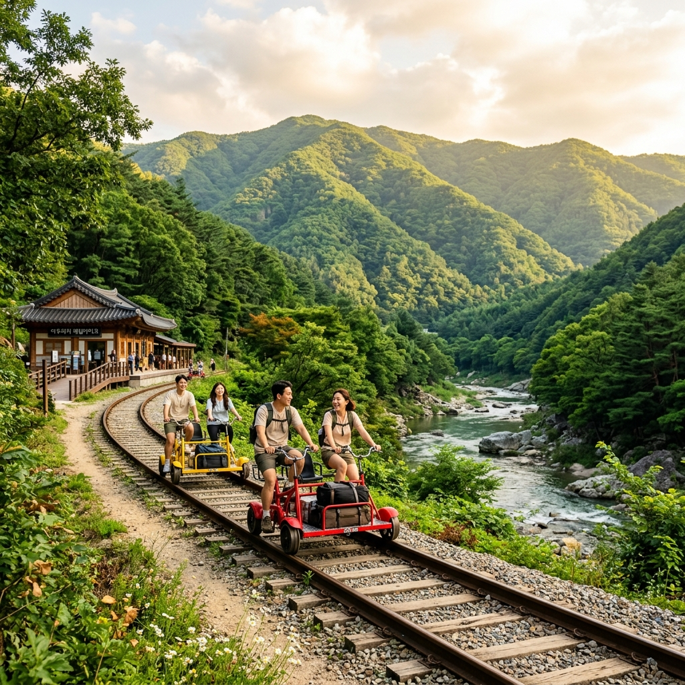
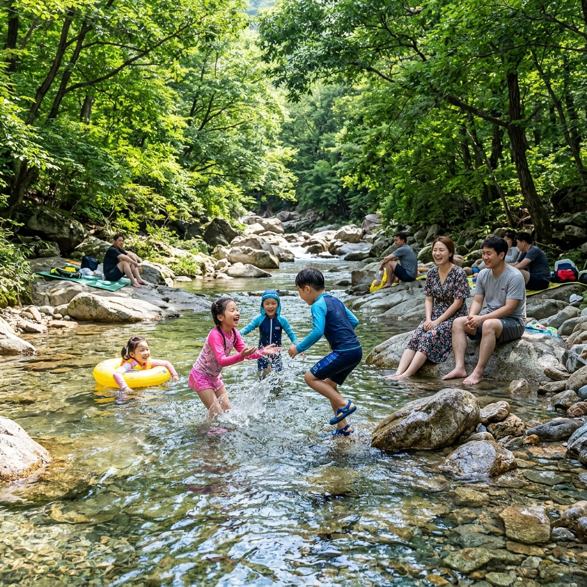
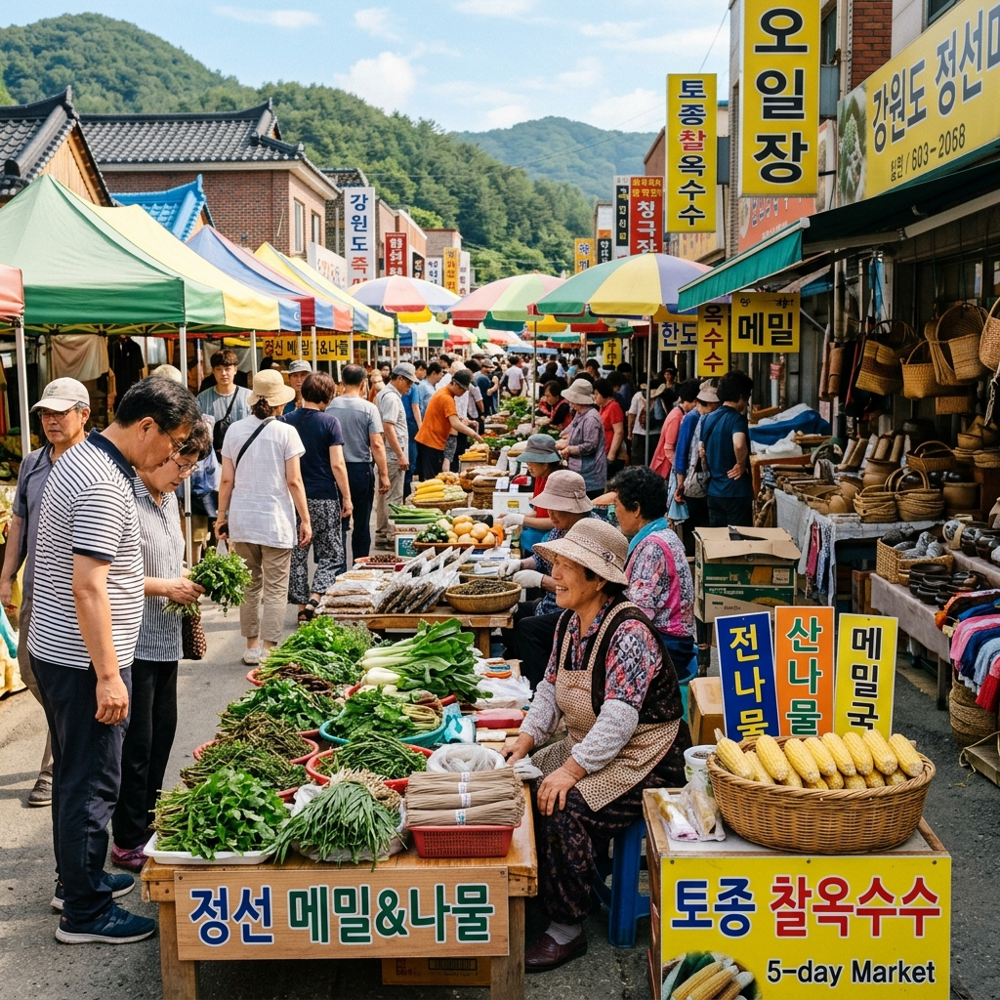

강원도 정선이라는 이름을 들으면 가장 먼저 정선아리랑의 구슬픈 선율이 떠오릅니다.
그 아리랑의 뿌리가 닿아 있는 곳이 바로 아우라지입니다.
두 강줄기가 합쳐지는 이 자리에서 조선시대 처녀와 뗏목꾼의 사랑 이야기가 탄생했고, 지금은 그 물길을 따라 레일바이크 선로가 놓여 있습니다.
여름방학을 앞두고 아이와 함께 갈 수 있는 강원도 여행지를 찾다가 정선 레일바이크를 발견했습니다.
기대 반 걱정 반으로 떠났지만, 터널을 통과할 때마다 쏟아지는 서늘한 바람과 창밖으로 펼쳐지는 에메랄드빛 계류는 그 기대를 훌쩍 넘었습니다.
아우라지는 순우리말로 '두 물이 어우러지는 곳'입니다.
강원도 정선군 여량면에서 임계천과 송천이 합류하는 이 지점은 수백 년 전부터 뗏목 산지로 이름 높았으며, 서울까지 목재를 실어 나르는 뗏목꾼들이 떠나고 돌아오는 길목이었습니다.
나루터 건너편 구절리로 가고 싶어도 강물이 불어 배를 띄울 수 없었던 처녀의 한이 노래로 남은 것이 정선아리랑의 기원이라고 전해집니다.
현재 아우라지 나루터 주변에는 처녀 총각상이 세워져 있고, 강변 산책로가 잘 정비되어 레일바이크 탑승 전 여유 산책을 즐기기에 좋습니다.
아우라지역 주변 매점에서는 정선 특산품과 간식도 구입할 수 있습니다.
드라마와 영화 촬영지로도 알려진 이 강변은 계절마다 다른 표정을 보여주는데, 여름에는 짙은 녹음 사이로 흐르는 에메랄드빛 물줄기가 압권입니다.

정선 레일바이크의 핵심 구간은 아우라지역을 출발해 구절리역까지 편도 약 7.2km에 달합니다.
1995년 폐선된 정선선 여량~구절리 구간의 선로를 그대로 활용한 것이라 독특한 아날로그 감성이 살아 있습니다.
2인승과 4인승 두 가지 종류의 레일바이크가 운행되며, 직접 페달을 밟아 속도를 내는 구조입니다.
선로 중간에 짧은 터널이 여럿 등장하는데, 내부에 조명이 설치되어 있어 어두운 구간도 아기자기하게 즐길 수 있습니다.
전 구간에서 왼쪽으로는 송천의 물소리가, 오른쪽으로는 깎아지른 산비탈과 울창한 여름 숲이 함께합니다.
전체 소요 시간은 여유 있게 즐기면 60~80분이며, 도착 후 셔틀버스로 아우라지로 복귀합니다.
선로 곳곳에 포토존과 중간 쉼터가 있어 원하는 곳에서 잠시 멈춰 사진을 찍을 수도 있습니다.
운영 시간은 성수기 기준 오전 9시부터 오후 4~5시 마지막 출발까지이며, 시즌에 따라 달라질 수 있으니 방문 전 정선레일바이크 공식 홈페이지에서 반드시 확인하세요.
2026년 성수기 기준 탑승 요금은 성인 2만 원 초중반대이며, 구절리역에서 돌아오는 셔틀버스는 별도 요금이 적용됩니다.
온라인 사전 예약은 정선레일바이크 공식 사이트를 통해 가능하고, 주말 오전 타임은 2주 전부터 마감되는 경우가 많습니다.
가장 한산한 타임은 평일 오전 첫 번째 출발이며, 주말이라면 오전 9시 타임을 狙하는 것이 최선입니다.
현장 당일권은 성수기에 매우 빨리 소진되므로 계획이 있다면 온라인 예약을 강력히 권장합니다.
4인 이상 가족 방문이라면 4인승 레일바이크가 경제적이고 왁자하게 즐길 수 있습니다.
취소 수수료 규정은 예약 시 꼼꼼히 확인해 두는 것이 좋습니다.
| 항목 | 세부 내용 |
|---|---|
| 편도 거리 | 약 7.2km (아우라지역→구절리역) |
| 소요 시간 | 60~80분 |
| 운영 | 09:00~17:00 (공홈 최신 확인) |
| 탑승 요금 | 성인 2만 원대 (공홈 확인 필수) |
| 복귀 셔틀 | 구절리역→아우라지 (별도 요금) |
레일바이크를 마치고 나면 아우라지 일대와 여량면 계곡으로 자연스럽게 발길이 이어집니다.
강원도 내륙 깊숙이 자리한 여량면 계곡은 수도권 유명 계곡에 비해 훨씬 한산하게 즐길 수 있는 여름 피서지입니다.
물이 맑고 차갑기로 유명해 발을 담그는 순간 한여름 더위가 순식간에 가십니다.
얕은 여울 구간이 곳곳에 있어 어린아이와 함께라도 안심하고 물놀이를 즐길 수 있으며, 너럭바위 위에서 간식을 먹으며 쉬어 가는 풍경이 정겹습니다.
무료로 이용할 수 있는 구간이 많고 별도 입장료가 없어 가성비 좋은 여름 피서지입니다.
다만 계곡 상류로 올라갈수록 급류가 발생하는 지점이 있으므로, 안전 표지판을 꼭 확인하세요.
여량면 일대에 오토캠핑장도 있어 1박 2일 계획으로 레일바이크 + 계곡을 함께 즐기는 것도 강력 추천합니다.

정선읍에서는 매월 2일, 7일, 12일, 17일, 22일, 27일에 5일장이 열립니다.
수십 년의 세월을 거쳐 지금도 할머니 상인들이 직접 기른 황기, 산나물, 잡곡, 도토리묵을 판매하는 살아있는 장터입니다.
정선 올챙이국수(메밀로 만든 올챙이 모양 국수)와 곤드레나물, 메밀전병은 장터 인근 식당에서 1만 원 안팎으로 맛볼 수 있습니다.
장날의 분주한 풍경과 웃음소리가 섞인 흥정 소리는 사진과 영상으로 담기 아까울 만큼 생생합니다.
당일 방문이 장날과 맞지 않더라도, 상설 가게에서 특산품 기념품 구입은 언제든지 가능합니다.
장날 방문 시에는 주차 혼잡을 피해 오전 일찍 도착하는 것이 좋습니다.
정선읍 중심가는 아우라지에서 차로 약 20분 거리라 레일바이크 당일 방문 코스로 충분합니다.

정선을 대표하는 향토 먹거리는 곤드레밥입니다.
고려엉겅퀴의 한 종류인 곤드레나물을 넣어 지은 밥에 들기름과 간장을 넣어 비비면 구수하고 담백한 맛이 일품입니다.
아우라지 인근과 여량면 읍내에서 1만 원 안팎으로 한 상 차림을 즐길 수 있습니다.
올챙이국수는 메밀 반죽을 구멍이 뚫린 틀에 넣어 눌러 만든 독특한 모양의 국수로, 차가운 육수에 담아 여름철 더위 식히기에 안성맞춤입니다.
메밀전병과 메밀전도 빠뜨릴 수 없는 정선 별미입니다. 고소한 메밀 향이 입안 가득 퍼지며 막걸리와의 궁합도 뛰어납니다.
아우라지역 인근에 강변 뷰 카페가 생겨 레일바이크 후 커피 한 잔으로 마무리하는 여행자들도 늘고 있습니다.
특산품 쇼핑으로는 황기, 정선 잡곡세트, 곤드레나물 건조품 등이 인기 기념품입니다.
✅ 이런 분께 추천
자연 속에서 페달을 밟으며 느리게 이동하는 것을 좋아하는 분, 아이와 함께 특별한 여름 기억을 만들고 싶은 가족 여행자, 강원도 오지의 고요함과 청정 계곡을 함께 즐기고 싶은 분께 적극 추천합니다.
❌ 이런 분께는 비추천
반대로 빠른 속도와 강한 자극을 원하는 액티비티 매니아분들께는 다소 심심하게 느껴질 수 있습니다.
더운 날씨에 직사광선 아래 장시간 페달을 밟는 것이 체력적으로 부담스러울 수 있으므로, 고령이시거나 더위에 민감한 분들은 자외선 차단을 철저히 하고 충분한 수분을 준비하세요.
또한 대중교통만으로 아우라지까지 이동하는 것이 번거롭기 때문에, 자차나 렌터카가 없다면 이동 계획을 미리 세워두세요.
구절리역에서 아우라지로 돌아오는 셔틀버스 대기 시간이 성수기에는 30분 이상 걸리기도 한다는 점도 염두에 두세요.
여량면 일대에는 계곡 인접 펜션과 오토캠핑장이 다수 운영됩니다.
여름 성수기에는 2~3주 전 예약이 기본이며, 주요 숙박 예약 플랫폼에서 비교해 선택하세요.
강변 캠핑은 계곡 물소리 가득한 최고의 밤을 선사하지만, 갑작스러운 집중호우 시에는 대피 계획을 반드시 세워두어야 합니다.
편의를 원한다면 정선읍내 모텔·관광호텔이 적합합니다.
정선군청 관광 홈페이지에서 공식 안내 숙박 목록을 확인할 수 있습니다.
서울에서 자차 이용 시 중앙고속도로 또는 영동~동해 고속도로를 이용해 42번 국도로 진입하면 됩니다.
내비게이션 목적지는 '아우라지역' 또는 '정선 레일바이크'로 설정하면 됩니다. 서울 동부 기준 약 2시간 30분~3시간 소요됩니다.
기차 여행을 원한다면 청량리역에서 정선 아리랑열차(A-트레인)를 이용하는 방법도 있습니다.
주차장은 아우라지역 인근 공영주차장이 무료 또는 저렴한 요금으로 운영됩니다.
오전 8~9시 사이 도착하면 주차 스트레스 없이 여유롭게 이용할 수 있습니다.
정선 읍내까지는 차로 약 20분이므로 하루 코스로 레일바이크 + 계곡 + 5일장을 충분히 소화할 수 있습니다.
선글라스와 자외선 차단제(SPF50+ PA+++ 이상)는 레일바이크 필수템입니다.
모자나 챙이 넓은 선캡을 착용하면 장시간 햇볕 노출을 줄일 수 있습니다.
운동화 착용을 권장하며, 샌들이나 슬리퍼는 페달 조작 시 불편합니다.
500ml 이상 물이나 이온 음료를 반드시 지참하세요.
카메라와 스마트폰을 안전하게 고정할 수 있는 크로스백 또는 힙색이 있으면 편리합니다.
갑작스러운 소나기에 대비한 얇은 우의 한 장을 배낭에 넣어두세요.
어린이 탑승은 연령·신장 제한이 있을 수 있으니 예약 전 홈페이지의 탑승 조건을 반드시 확인하세요.